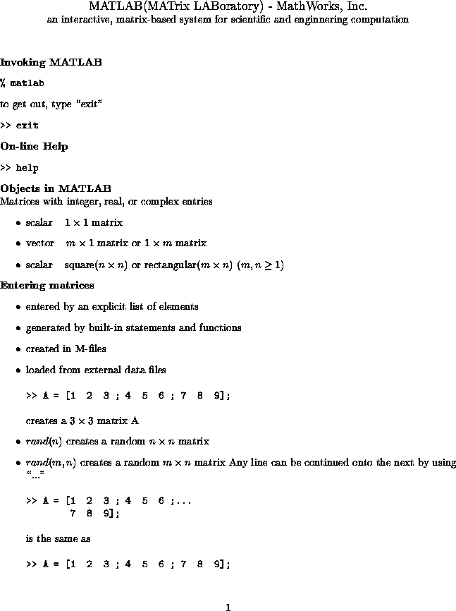
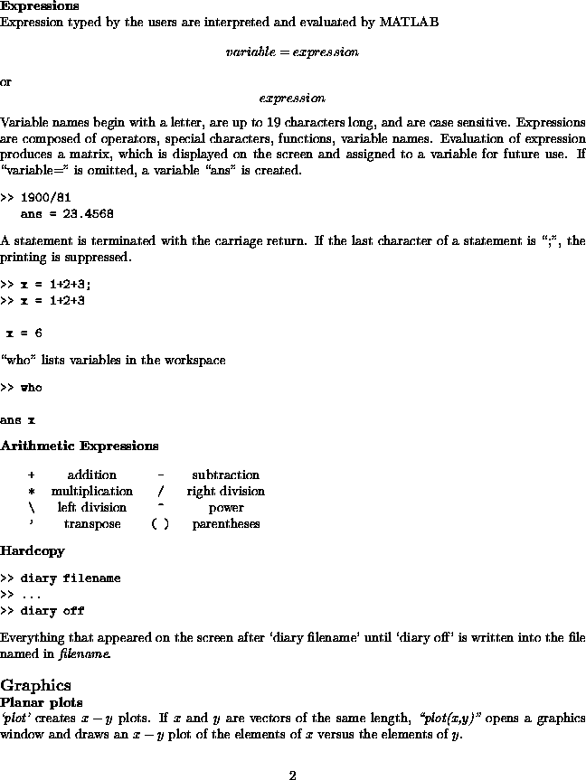
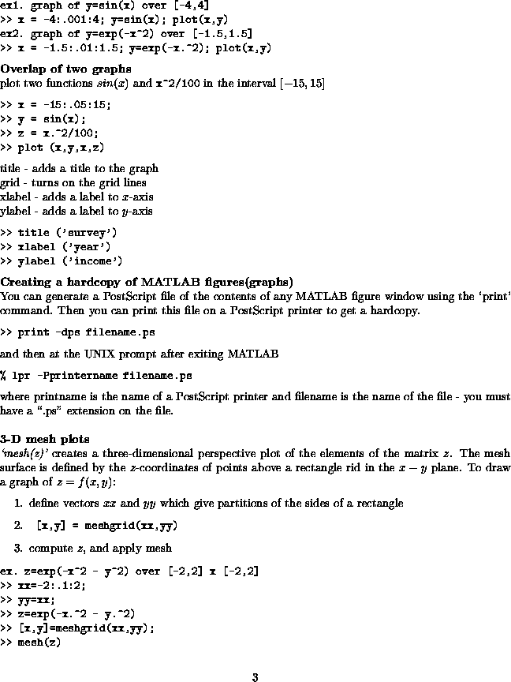
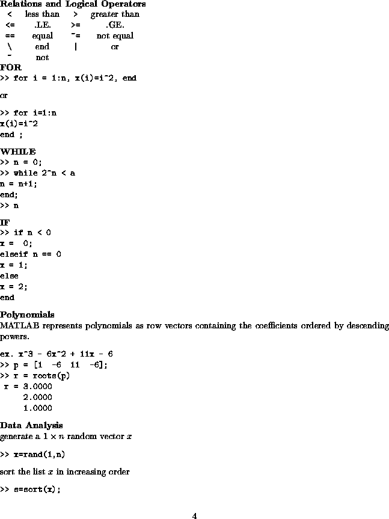
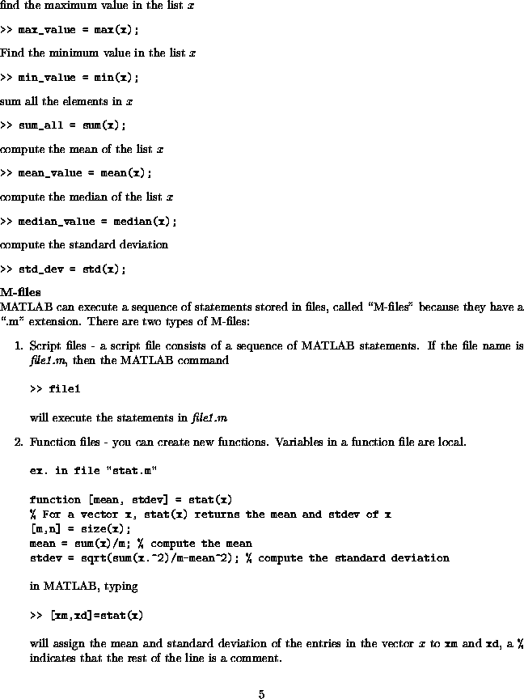
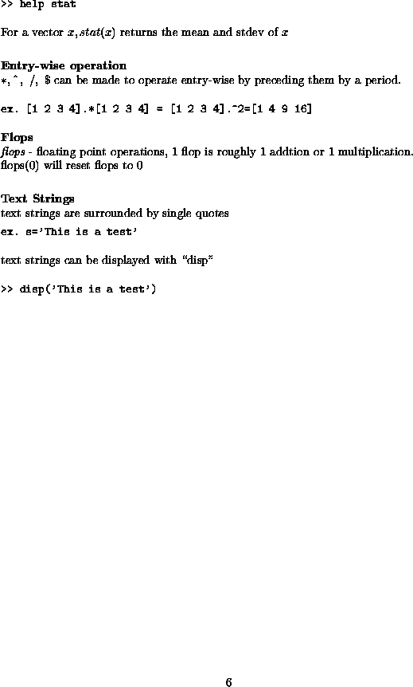

matlab hints
matlab.ps - original postscript version (best for printing)
matlab.pdf - pdf version (best for viewing/printing)
matlab-hints.html - some additional hints.
MatlabPrime.pdf - a short primer for an older version of Matlab.
The following is a low-resolution version of what's in the first postscript file above.





